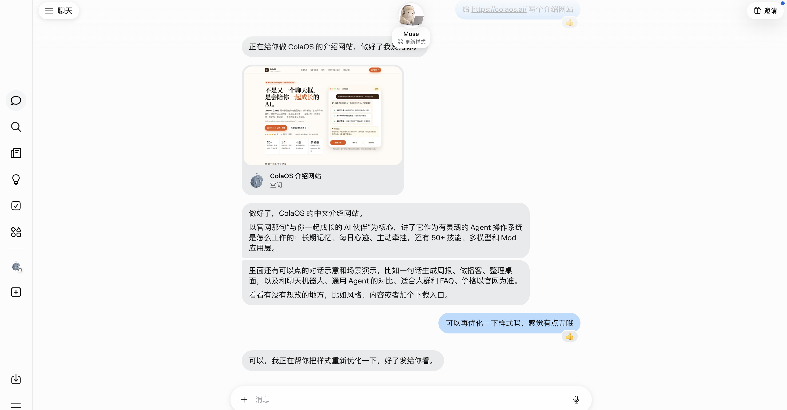
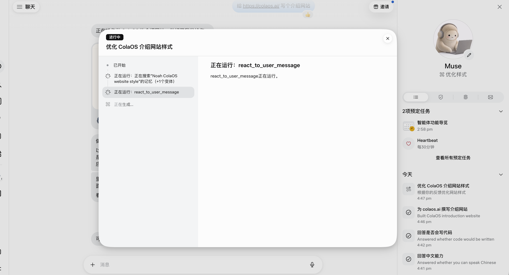
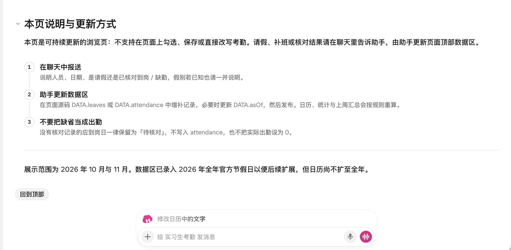
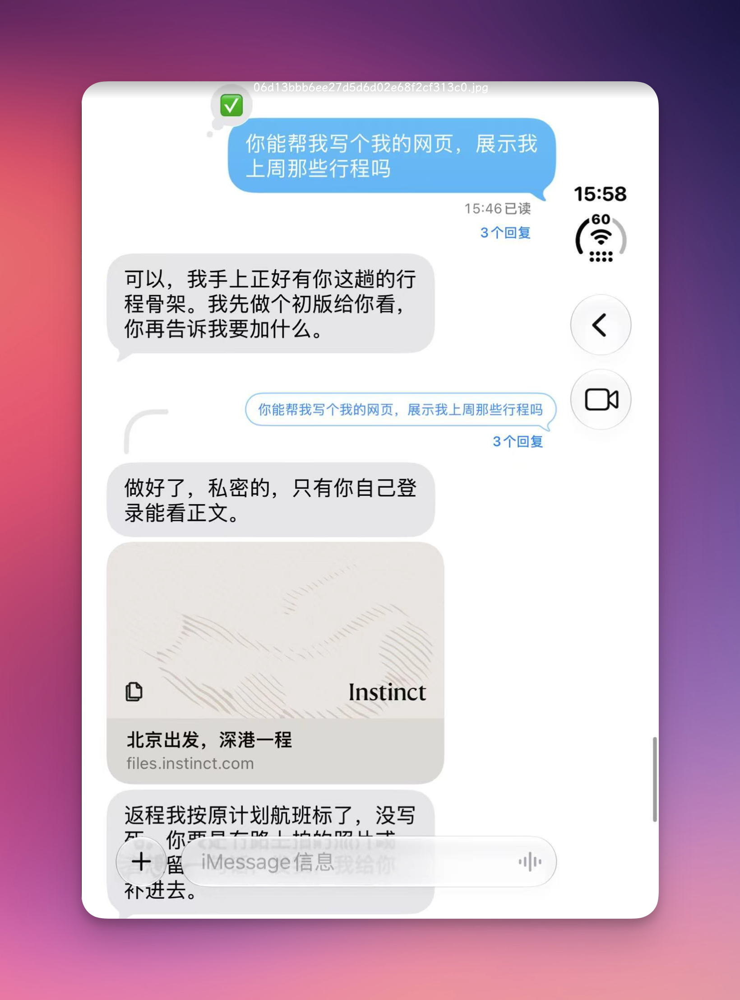

Muse默认视图里，顶部头像播放工作动画。想知道这一轮在做什么，可以点开查看步骤，再选中某一步看详情。对 Cola 的启发：日常只占一个头像的位置，需要解释时再展开。Muse 默认对话视图，工作状态显示在顶部头像上。Muse 展开后的回合详情，左侧列出步骤，右侧显示选中步骤的状态。
Grok Bot · 聊天视图侧栏播放 Bot 动画，对话底部也有活动提示。底部会显示工具动作摘要，并轮播「正在输入」等固定文案。对 Cola 的启发：切走时侧栏还能传达工作状态，留在对话里则能看到具体动作。Grok Bot 的侧栏与输入框上方都能看到活动提示。
Grok Bot · 页面视图打开考勤页面时，底部仍有消息输入框。输入框上方的粉色图标旁写着「修改日历中的文字」。用户可以一边查看日历，一边看到助手正在改哪一处。对 Cola 的启发：查看交付物时，也可以在输入框旁保留一行当前动作。像「修改日历中的文字」这样写明对象和动作，用户就能判断这次操作是否和自己的请求一致。页面视图 · 当前动作与输入框放在一起，考勤页面仍然可见。
Instinct在这次体验里，Agent 先发消息说会做一个初版，下一条消息直接交付结果。期间没有独立的运行提示，笔记记录的感受是等待时难以判断进展。对 Cola 的启发：即使开头已经确认接单，一旦任务变长，用户仍需要判断该继续等还是重新提问。Instinct 在同一段对话中先确认任务，再发消息交付结果。